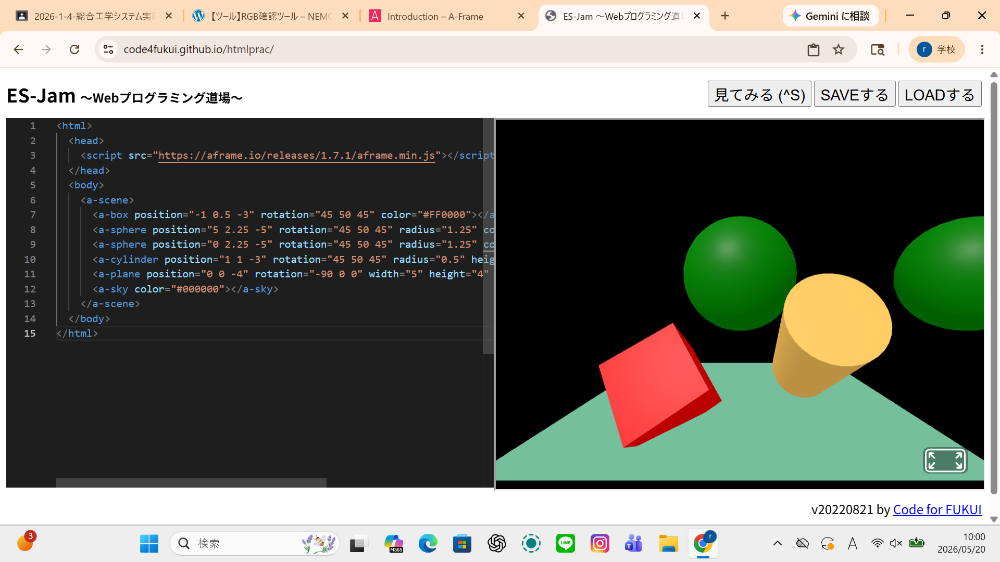
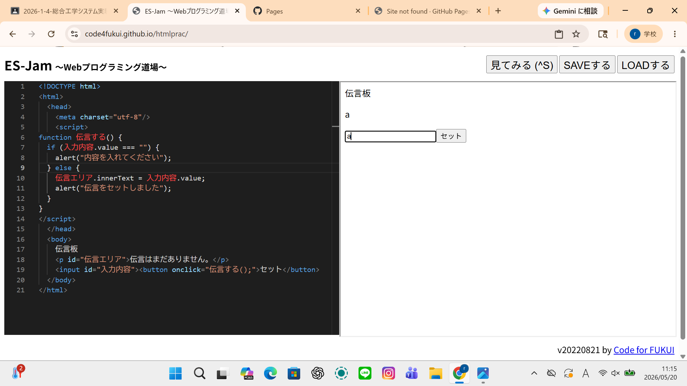

３週目のレポート ： 公大高専１年実習I-1
4a班18番 simo
第3週目
3-1 JavaScript体験：VR空間を作る

自作した３次元空間
1.内容
VR空間で場所を変えたり、角度を変えたり、大きさを変えたり、色を自分で作り出して物体の色を変える方法を学ぶことができました。
2.感想
VR空間で場所や角度、大きさの変更に加え、自分で色を作って物体を変色させる方法を学びました。自由自在に空間やオブジェクトを創り変える楽しさと可能性を実感しました。
3-2 JavaScript体験：伝言プログラムを作る

伝言板
1.内容
伝言プログラムでは、コードを作って、見てみるっていうボタンを押すと作ったコードの内容を伝言として打ち込むことができるプログラムの作り方を学ぶことができました。
2.感想
伝言プログラムの作成を通じて、自分で書いたコードの内容を「見てみる」ボタンで実際の伝言メッセージとして画面に打ち込む（反映させる）仕組みを学ぶことができました。
各ページへのリンク
1週目のレポート
2週目のレポート
3週目のレポート
私のホームページ